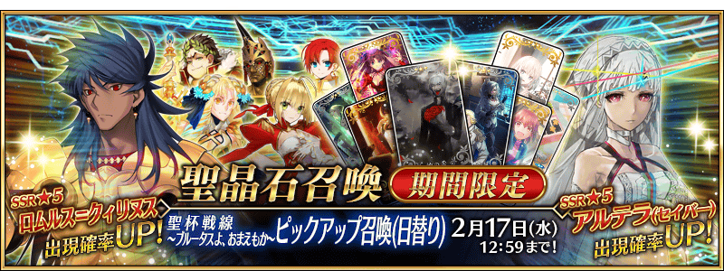
◆「聖杯戰線 ～還有你嗎，布魯圖斯～Pick Up召喚(每日交替)」期間◆
期間:2021年2月3日(三) 17:00～2月17日(三) 11:59
期間限定「聖杯戰線 ～還有你嗎，布魯圖斯～Pick Up召喚(每日交替)」舉辦！
本次從期間限定活動「聖杯戰線 ～還有你嗎，布魯圖斯～」關聯從者之中，包含1位期間限定從者的下述從者Pick Up！
▼期間限定從者
【每日交替Pick Up】
・★5(SSR)羅慕路斯＝奎里努斯
▼Pick Up從者
【每日交替Pick Up】
・★5(SSR)阿提拉(Saber)
【常駐Pick Up】 ・★4(SR)尼祿・克勞狄烏斯(Saber) ・★4(SR)阿斯特蕾亞 ・★3(R)蓋烏斯・尤利烏斯・凱撒 ・★3(R)羅慕路斯 ・★3(R)布狄卡
Pick Up期間中は、Pick Up對象從者的出現機率提升します！
詳情請在聖晶石召喚畫面左下的召喚詳細確認。
11次召喚中確定1張★4(SR)以上和確定1位★3(R)以上的從者！ ※確定★4(SR)以上包含從者和概念禮裝。 ※本頁面皆為開發中圖片。會有與實際圖片相異的情況。
◆有關從者的注意◆
※請注意本召喚做為每日交替，下述的從者就算舉辦期間中也有不會被抽出來的日子。
・★5(SSR)羅慕路斯＝奎里努斯
※下述的從者在Pick Up期間結束後不會追加到故事召喚。
・★5(SSR)羅慕路斯＝奎里努斯
※本召喚的Pick Up期間中，透過故事進行所追加的下述從者就算通過各章前也能入手。
・★4(SR)尼祿・克勞狄烏斯(Saber)
※下述的從者在Pick Up期間結束後仍會在故事召喚被抽出。
・★5(SSR)阿提拉(Saber)
・★4(SR)尼祿・克勞狄烏斯(Saber)
・★4(SR)阿斯特蕾亞
・★3(R)蓋烏斯・尤利烏斯・凱撒
・★3(R)羅慕路斯
・★3(R)布狄卡
◆「聖杯戰線 ～還有你嗎，布魯圖斯～Pick Up召喚(每日交替)」Pick Up內容◆
| Pick Up期間 | Pick Up內容 | |
|---|---|---|
| 每日交替Pick Up | 全天Pick Up | |
|
2/3(三) 17:00～ 2/4(四) 22:59 |
★5 羅慕路斯＝奎里努斯 |
★4 尼祿・克勞狄烏斯(Saber) ★4 阿斯特蕾亞 ★3 蓋烏斯・尤利烏斯・凱撒 ★3 羅慕路斯 ★3 布狄卡 |
|
2/4(四) 23:00～ 2/6(六) 22:59 |
★5 阿提拉(Saber) | |
|
2/6(六) 23:00～ 2/8(一) 22:59 |
★5 羅慕路斯＝奎里努斯 | |
|
2/8(一) 23:00～ 2/11(四) 22:59 |
★5 羅慕路斯＝奎里努斯 ★5 阿提拉(Saber) |
|
|
2/11(四) 23:00～ 2/13(六) 22:59 |
★5 羅慕路斯＝奎里努斯 | |
|
2/13(六) 23:00～ 2/15(一) 22:59 |
★5 阿提拉(Saber) | |
|
2/15(一) 23:00～ 2/17(三) 11:59 |
★5 羅慕路斯＝奎里努斯 ★5 阿提拉(Saber) |
|
※請注意會以每日交替變更Pick Up的從者。
 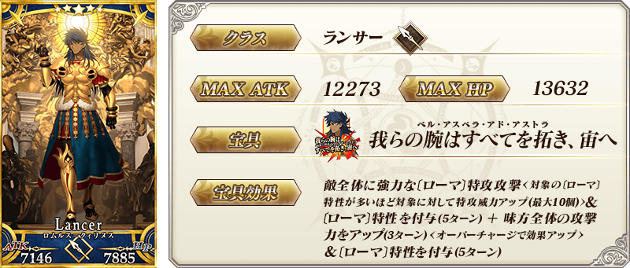
※上述「★5(SSR)羅慕路斯＝奎里努斯」的卡面為靈基再臨第1階段。
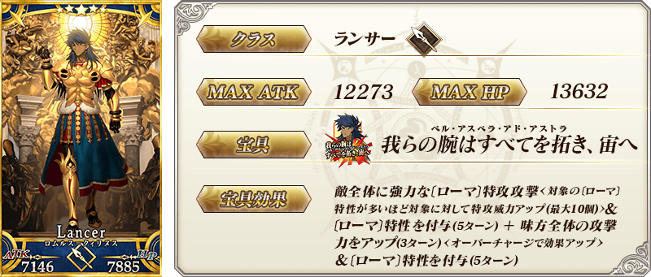
※上述「★5(SSR)羅慕路斯＝奎里努斯」的卡面為靈基再臨第1階段。

 ※上述「★5(SSR)阿提拉(Saber)」的卡面為靈基再臨第1階段。
※上述「★5(SSR)阿提拉(Saber)」的卡面為靈基再臨第1階段。
 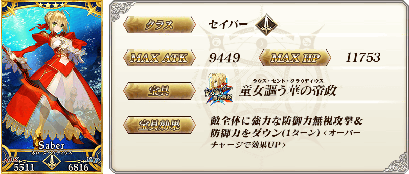
※上述「★4(SR)尼祿・克勞狄烏斯(Saber)」的卡面為靈基再臨第1階段。
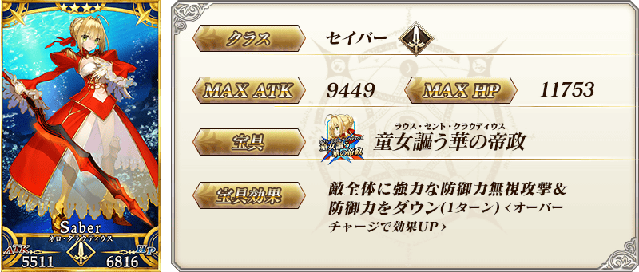
※上述「★4(SR)尼祿・克勞狄烏斯(Saber)」的卡面為靈基再臨第1階段。
 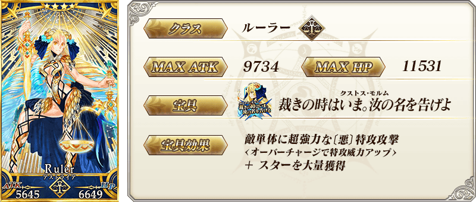
※上述「★4(SR)阿斯特蕾亞」的卡面為靈基再臨第1階段。
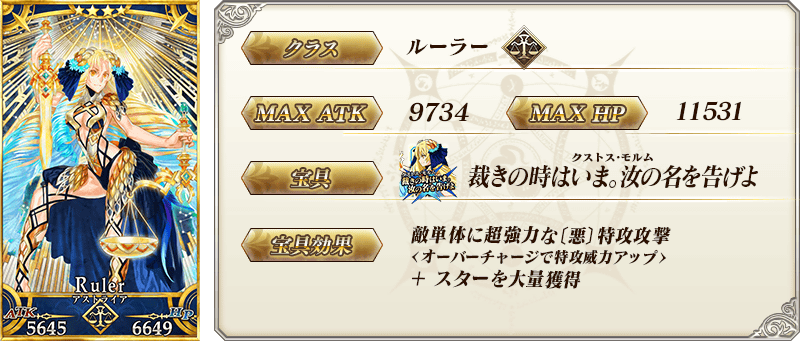
※上述「★4(SR)阿斯特蕾亞」的卡面為靈基再臨第1階段。

 ※上述「★3(R)蓋烏斯・尤利烏斯・凱撒」的卡面為靈基再臨第1階段。
※上述「★3(R)蓋烏斯・尤利烏斯・凱撒」的卡面為靈基再臨第1階段。
 ※上述「★3(R)羅慕路斯」的卡面為靈基再臨第1階段。
※上述「★3(R)羅慕路斯」的卡面為靈基再臨第1階段。
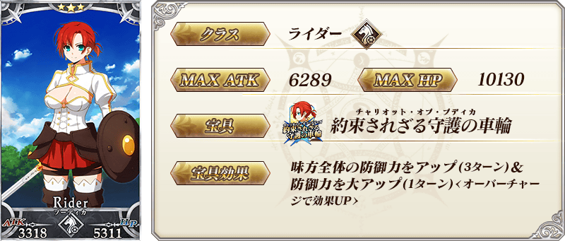 ※上述「★3(R)布狄卡」的卡面為靈基再臨第1階段。
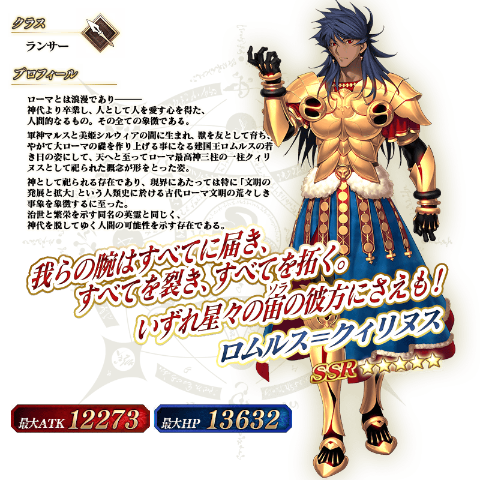 ※上述「★5(SSR)羅慕路斯＝奎里努斯」的立繪為靈基再臨第1階段。
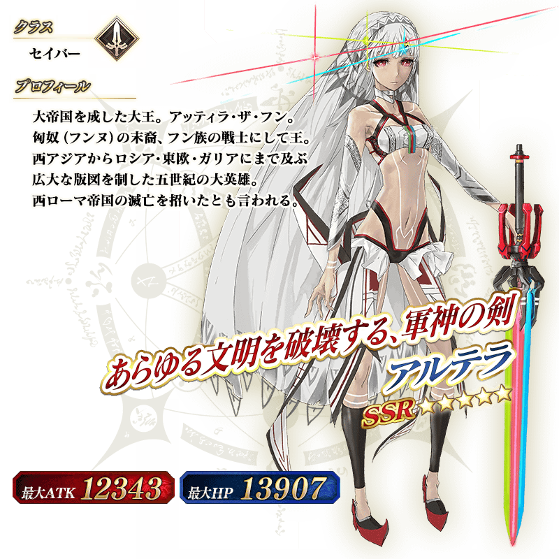 ※上述「★5(SSR)阿提拉(Saber)」的立繪為靈基再臨第1階段。
在2017年舉辦的期間限定活動「尼祿祭再臨 ～2017 Autumn～」中登場的「★4(SR)尼祿・克勞狄烏斯(Saber)」靈衣「奧林匹亞的體操服(オリンピアの体操服)」開放權在達文西工房的「稀有稜鏡交換」追加！
可用稀有稜鏡5個交換上述靈衣開放權入手。
另外，想開放靈衣的話，除了靈衣開放權外再加上必須滿足一些開放條件。
◆追加時間◆
2021年2月3日(三) 17:00～
◆交換條件◆
滿足以下條件的御主才能交換
・通過「特異點F 炎上汙染都市 冬木」
・未入手靈衣「奧林匹亞的體操服」開放權
※在「稀有稜鏡交換」追加的靈衣「奧林匹亞的體操服」開放權為永久，沒有交換期限。 ※關於已獲得交換對象靈衣開放權的玩家，無法交換。
◆有關靈衣開放權的注意◆
※本次追加的「★4(SR)尼祿・克勞狄烏斯(Saber)」的靈衣會配合外觀變化一部份語音。
※請注意未持有「★4(SR)尼祿・克勞狄烏斯(Saber)」的情況，可入手靈衣開放權。但無法進行靈衣開放。
◆追加道具(永久)◆
| 追加道具 | 能交換次數 | 1次交換所需的 稀有稜鏡數 |
|---|---|---|
| 靈衣「奧林匹亞的體操服」開放權 | 1次 | 5個 |
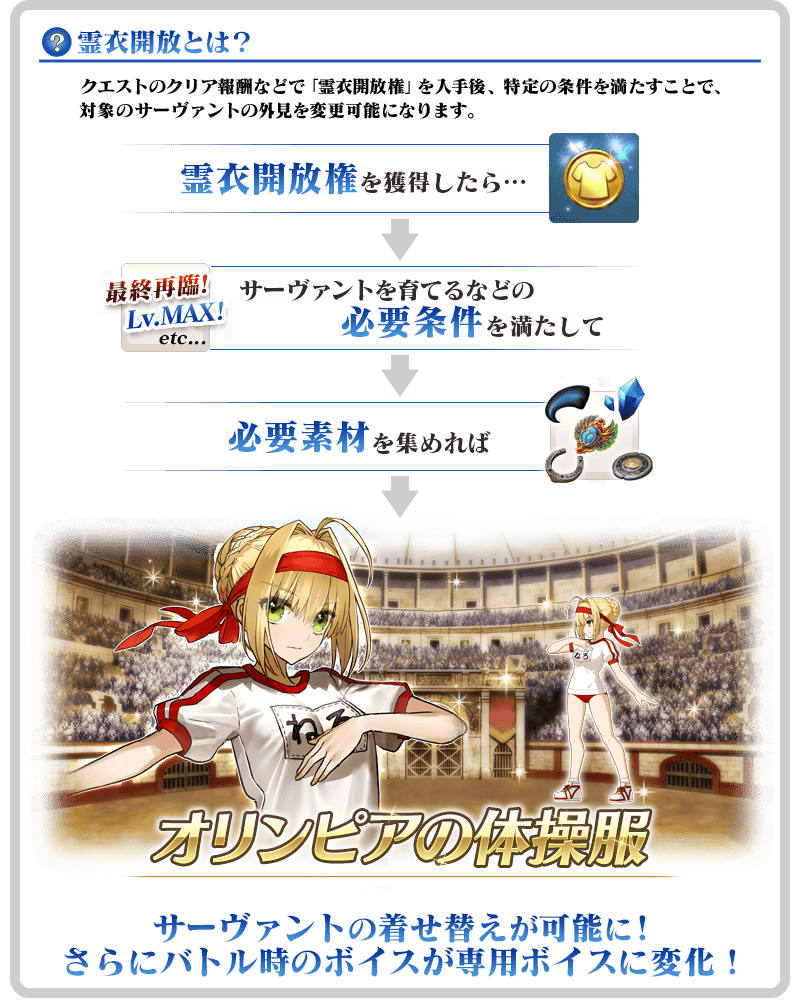

「靈衣開放」是自強化畫面進行。
※「靈衣開放」後會自動切換戰鬥角色和圖示。若想回到「靈衣開放」前的狀態和變成其他再臨階段的情況，可自從者詳細畫面變更。 ※進行「靈衣開放」不會讓職階和能力等有所變化。
介紹開放靈衣「奧林匹亞的體操服」的「★4(SR)尼祿・克勞狄烏斯(Saber)」寶具演出！
在「Fate/Grand Order」官方網站內的公告中，以影片公開寶具演出，敬請確認。
「★3(R)布狄卡」的戰鬥動作及寶具演出翻新！
另外，伴隨對一部份裝置全螢幕顯示的對應，「★3(R)布狄卡」的寶具演出也對應到全螢幕顯示。
在「Fate/Grand Order」官方網站內的公告中，以影片公開寶具演出，敬請確認。
◆翻新實施時間◆
2021年2月3日(三) 17:00～
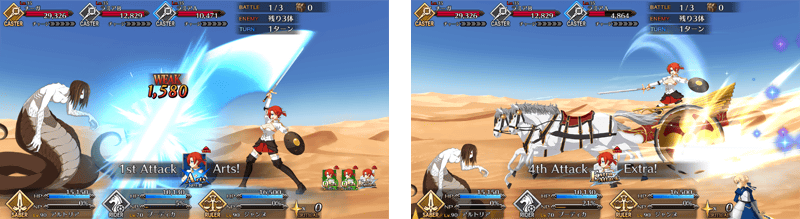
介紹在本召喚Pick Up的4位從者寶具演出！
在「Fate/Grand Order」官方網站內的公告中，以影片公開寶具演出，敬請確認。
【★5(SSR)羅慕路斯＝奎里努斯】
【★5(SSR)阿提拉(Saber)】
【★4(SR)尼祿・克勞狄烏斯(Saber)】
【★4(SR)阿斯特蕾亞】
強化「★3(R)布狄卡」的特別關卡「從者強化關卡」，在迦勒底之門永久追加。
不僅進行對象從者的強化，也可獲得聖晶石做為關卡通過報酬。
※請注意在從者強化關卡沒有文字冒險部份。
◆追加時間◆
2021年2月3日(三) 17:00～
◆開放條件◆
持有的強化對象從者，必須使其最終再臨。
※未持有對象從者的話，不會出現關卡。
※關卡沒有舉辦期限。
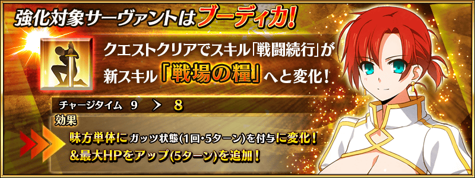
其他還有，期間限定活動「聖杯戰線 ～還有你嗎，布魯圖斯～」同時舉辦！
關於詳情，請自下述橫幅確認。
■「聖杯戰線 ～還有你嗎，布魯圖斯～」詳細情報 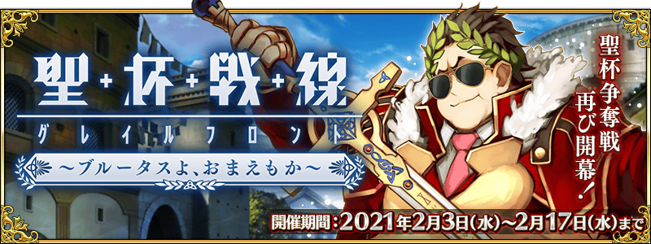